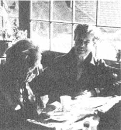

As we've noted several times in these pages, Helen and Scott Nearing are light years ahead of most of us when it comes to getting back to the land and living a life of voluntary simplicity. As well they should be, since they originally homesteaded a run-down farm in Vermont's Green Mountains away back in the autumn of 1932.
Life was good for the hearings on that mini-farm . . . until the slopes around them exploded into ski resorts in the early 50's (restricted) , forcing Helen and Scott to move on to a rocky inlet on the coast of Maine and start all over again.
And that's where you'll find the Nearings today: still clearing brush, still building honest stone houses (Helen and Scott are famous for their stone houses), and still raising most of their vegetarian diet themselves in unbelievably productive wholistic gardens … just as they've been doing for nearly 50 years.
Naturally (in more ways than one), the Nearings have learned a few things about homesteading and getting back to basics over the years. And, lucky for all of us, they've agreed to share some of that knowledge with MOTHER's readers in a regular question and answer column. If you'd like to get in on the action, send your question or questions about self-sufficient living on the land to Helen and Scott Nearing, THE Mother Earth News (restricted) , P.O. Box 70, Hendersonville, N.C. 28739. And please don't expect personal replies to your queries. The most important and most frequently asked questions will be answered here-and here only-where we all can read what the Nearings have to say.
My husband and I have been happily married for five years and will soon have our own homestead. We'd love to have children, but, frankly, we're worried about the future. The lack of available quality education, the problem of pollution (especially nuclear), the possibility of economic collapse, and the threat of war on an overcrowded planet all seem to be good arguments against bringing young people into the world. We'd appreciate your views on this subject.
In our childbearing years, we already had second thoughts about having children . . . for the reasons you have aptly outlined.
At present, the unsettled social conditions in the U.S. preclude any possibility of bringing up children normally . . . even in a secluded homestead environment. Television and schools are sure to provide corruptive influences. (However, a young neighbor of ours, Melissa Coleman-when given cheap candy at a school Halloween party-accepted it sweetly, didn't eat it, came home, and put it on the compost pile. She was wise beyond her years.)
Personally-as a woman-I've felt no deprivation from lack of children . . . but, who knows, a few little Scotties and Scottinas racing around might have been nice. On the other hand, I happen to believe in reincarnation and feel sure I've had hundreds of children in other lives and will have many again. This particular life-free of my own brood-has proved interesting and productive, and there've been plenty of other people's children roundabout.
We've gotten our land, and-just as we'd hoped-it's a good way from "civilization" . . . and at the end of some pretty rough roads. What do you think (in view of today's high gasoline prices) would be the most practical vehicle for us to own?
Your choice of a vehicle will, of course, depend on what you expect to haul: passengers, or heavy loads of materials. For the latter, a pickup truck with four-wheel drive is invaluable. It will use up more gas than a small car, but the jobs it can do for you will probably be worth the expense. If you're more interested in toting people, get a small station wagon that will haul light loads and passengers.
We find a four-wheel-drive pickup necessary on the farm, and have a diesel runabout for long distance driving.
Have you ever kept pets such as a dog or cat? My parents think that having such animals is a waste of time and food. We have farm animals that I like a lot, but I'd love to have a dog and cat, too. What do you think?
Vegetarians should not have pets, especially meat-eating ones. Nor, thinks Scott, should any self-respecting person own a self-respecting animal, as this involves an act of slavery . . . one to the other. He asks: "Do you keep the cat or dog, or does the animal keep you to take care of it ?"
I have a cat that I dearly love, yet I definitely dislike having to teed it cat food and keep it away from the birds. This cat will be my last (but I've said that about the last three or four I've had!).
You wrote (in MOTHER NO. 54) that you use soap powder for laundry. I, too, preferred and used Duz soap powder until earlier this year, when it disappeared from the grocery shelves. Now, I can't find this product anywhere. The only soap powder I've found to replace it is a gentle baby soap, and I want the heavy-duty kind. Where do you think it might be available, and what brand do you use?
I don't know much about brand names or availability. I have a large supply of Fels Naptha boxes for my laundry, and over a dozen ancient (and very hard) cakes of Ivory soap that I can turn into shavings.
You've mentioned in previous issues that you sold your maple syrup and your blueberries to cover overhead costs on your homestead. What methods did you use to advertise these products?
At sugaring time, we sent out a leaflet which gave prices and so forth . . . put small ads in some magazines whose rates we could afford . . . and had a 40-mile route that covered a number of roadside stands which handled our products. We usually took half a day each week to travel to these stands and, by doing so, we kept in touch with our store customers. People also came to the door to buy directly from us.
It's been easier with blueberries. Folks come to pick their own . . . either for the market price or on shares. We've never had to advertise blueberries, but they're not easily shippable anyway.
I'm a vegetarian . . . not only because of the economic and nutritional factors involved, but because I believe it's morally wrong to eat the flesh of once-living creatures. Some of my friends say that- if it's wrong to eat meat-it must also be wrong to eat plants. They point out that plants are also alive, and-according to recent research-can demonstrate a remarkable range of emotions. That leaves me with nothing to eat!
What is your response to this kind of argument? Also, do you take any types of supplements? And what do you do about minor illnesses?
Surely, plants feel . . . and we apologize when we consume them.
All forms of life have at least the rudiments of thoughts and feelings . . . we're quite aware of that. We try to eat as low on the sentient chain as possible. Fruits and nuts-end products that the tree or plant is "finished with"-might be the logical food solution.
In any case we must eat (and kill) something in order to stay alive. In the new anti-cook book I'm writing, I have a chapter entitled "To Kill or Not to Kill", and it discusses the morality of taking any life.
As to supplements, when we travel abroad-and can't get our usual good home food-we carry vitamins C, B, and E with us. At home, we hardly need them, though we recently started taking some B12 tablets. We drink our own rose hip juice for vitamin C, put brewer's yeast in some soups, and add wheat germ to applesauce.
For minor illnesses (do you mean colds?), we do what the animals do: stop eating, go on liquids, and rest as much as possible.
|
 |
|
|